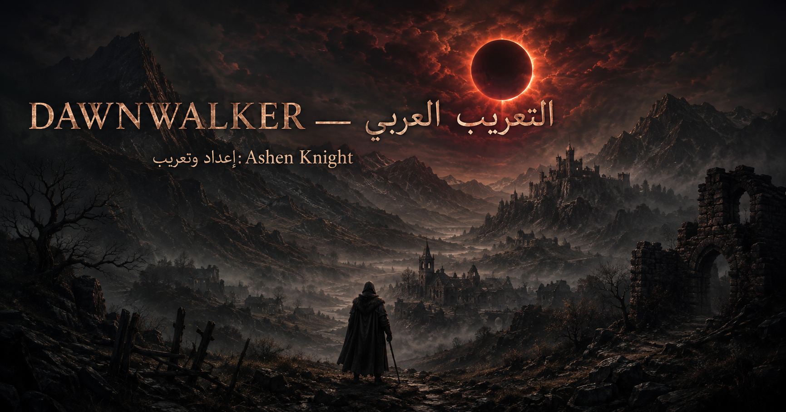

لغة مستقلة بالكامل
تظهر «العربية» في قائمة اللغات دون استبدال الإنجليزية أو إخفاء أي لغة أصلية.
من الظلال… تولد لغة جديدة
تعريب عربي احترافي يحافظ على قتامة العالم، واختلاف أصوات الشخصيات، ودقة القتال والقوائم—مكتوب ليبدو جزءًا أصيلًا من اللعبة.

تعريب يُحترم
منهجية موحدة للمصطلحات، وذاكرة ترجمة، ومراجعة سياقية للحوار والسرد والقوائم.
تظهر «العربية» في قائمة اللغات دون استبدال الإنجليزية أو إخفاء أي لغة أصلية.
حوارات وسرد بفصحى طبيعية تحافظ على المكانة الاجتماعية ونبرة كل شخصية.
مصطلحات القتال والقدرات والواجهة صيغت للوضوح والاتساق، لا للحرفية.
بوابة التثبيت
الحزمتان تحملان التعريب نفسه؛ اختر المثبّت للسهولة أو ملفات PAK للتحكم اليدوي.
يكتشف مسار Steam، ويتحقق من سلامة الحزمة، ويثبت الملفات أو يزيلها بأمان.
حزمة مباشرة للمستخدم المتقدم، مع ملف تعريف وتعليمات تثبيت عربية واضحة.
ضع الجزأين .001 و.002 في مجلد واحد، ثم افتح ملف .001 ببرنامج 7-Zip.
ثلاث خطوات
تُضاف العربية كلغة حقيقية مستقلة داخل اللعبة.
اختر المثبّت أو الحزمة اليدوية من صفحة الإصدار، ثم استخرج ملف .001.
شغّل المثبّت، أو انسخ الملفات الثلاثة إلى Dawnwalker\Content\Paks.
شغّل اللعبة وافتح إعدادات اللغة، ثم اختر «العربية».
سلامة IDs وKeys والمتغيرات والوسوم، وفحص الحاوية وRound-trip—دون أخطاء بناء.